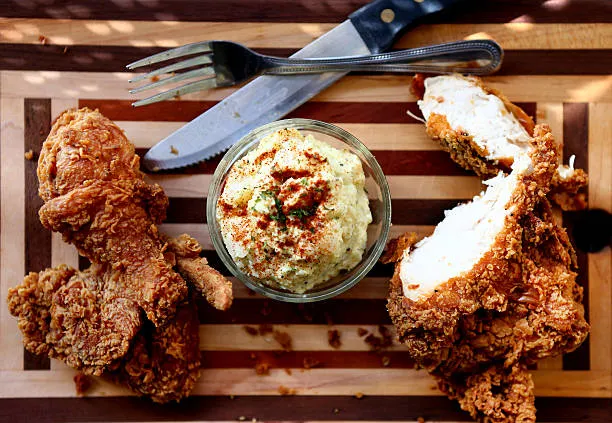

Fried Chicken

Description
Crispy on the outside, juicy on the inside—fried chicken is a mouthwatering delight that never goes out of style.
This dish features chicken pieces coated in a seasoned batter and deep-fried to golden perfection. The crunchy crust locks in the juices, creating a tender and flavorful bite every time.
Ingredients
- 500g chicken (drumsticks or boneless pieces)
- 1 cup buttermilk (or ½ cup yogurt + ½ cup water)
- 1 teaspoon salt
- ½ teaspoon black pepper
- 1 teaspoon garlic powder
- 1 teaspoon onion powder
- 1 teaspoon paprika (optional, for color)
- 1 teaspoon cayenne pepper (optional, for spice)
- 1 cup all-purpose flour
- ½ cup cornstarch (for extra crispiness)
- 1 teaspoon baking powder
- 2 eggs (beaten)
- Oil (for deep frying)
Steps
- In a bowl, mix buttermilk, salt, black pepper, and half of the garlic powder.
- Add the chicken pieces and let them marinate for at least 1 hour (or overnight for better flavor).
- In another bowl, combine flour, cornstarch, baking powder, paprika, cayenne, onion powder, and the remaining garlic powder.
- Heat oil in a deep frying pan to 175°C (350°F).
- Take each marinated chicken piece, dip it into the beaten eggs, then coat it in the flour mixture.
- Shake off excess flour and carefully place the chicken into the hot oil.
- Fry for 8-12 minutes, turning occasionally, until golden brown and cooked through.
- Remove and drain on a paper towel to absorb excess oil.
- Serve hot with your favorite dipping sauce.
Home